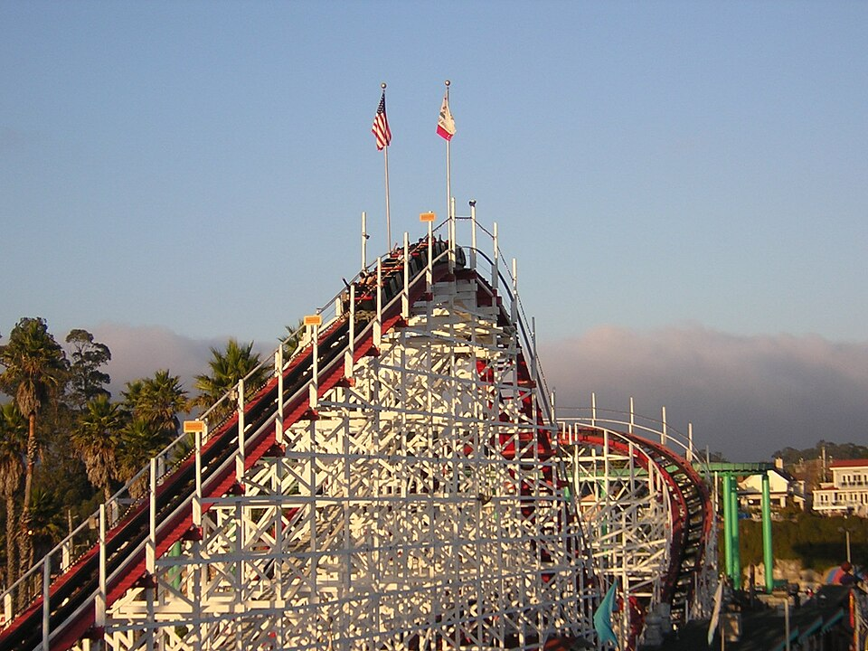
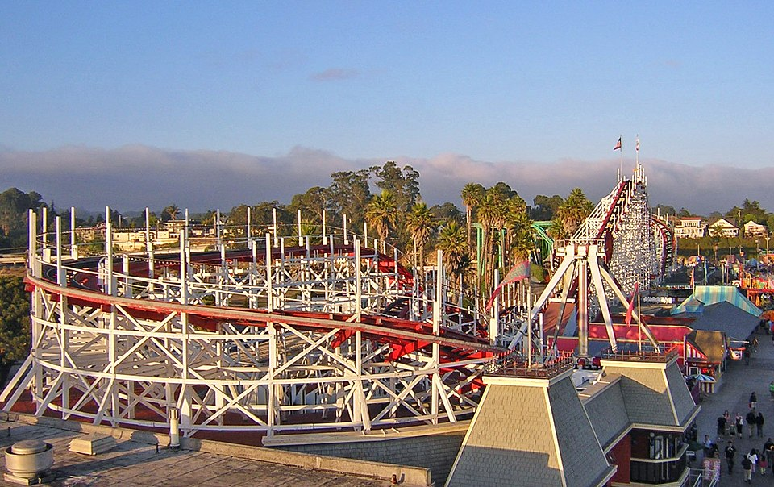

Les coasters en bois sont les plus anciens. Ils existent depuis les années 20. L'un des plus ancien s'appelle Giant Dipper.
Il ouvre ses portes aux Etats-Unis en 1924 et est aujourd'hui, toujours en fonction. C'est l'un des plus anciens parcours de montagnes russes encore en fonction.
Le "lift" de Giant Deeper

Le "layout" de Giant Deeper

Avec le temps, les montagnes russes en bois sont devenue de plus en plus grande et de plus en plus haute
Fin des année 1970 ouvre "Beast" un coaster en bois qui détient toujours le record de la plus longue du monde.
Mais ce n'est pas tout, c'est aussi l'avènement des montagnes russes dites "aller-retour".
Les montagnes russes aller & retour montent un lift hill, vont au plus loin de leur parcours, font un virage de 180° puis reviennent à la station. Ce design particulier est très populaire et facile à construire. Dans la partie "aller", les bosses sont grandes et décroissent, sur la partie "retour", les bosses sont souvent des "bunny hops", ou des petites bosses générant beaucoup d'airtime
Le "lift" de Giant DeeperLe "layout" de Giant Deeper